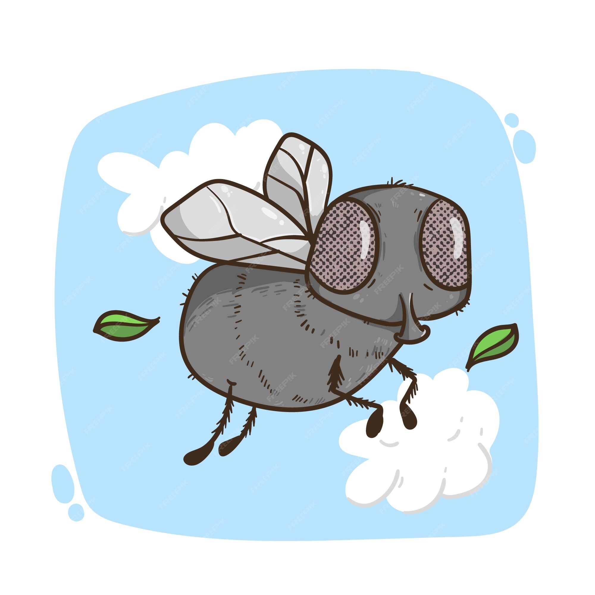
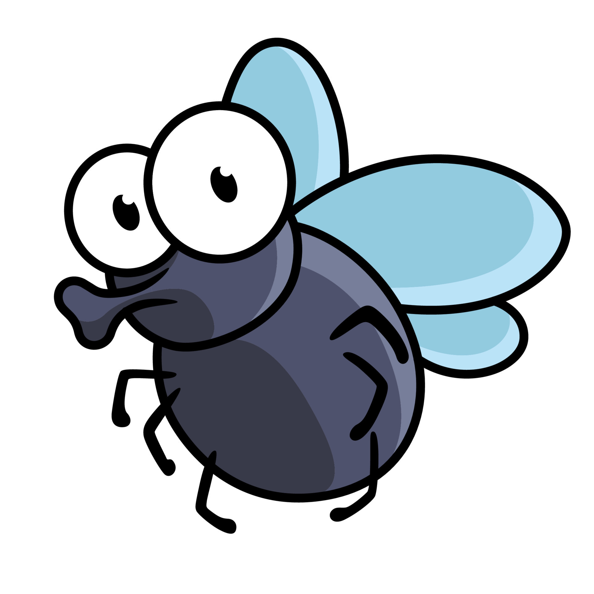
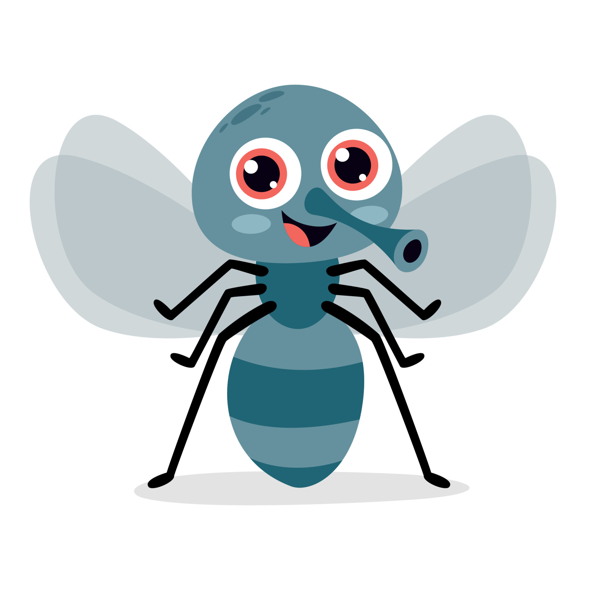

Pour lancer un jeu, clique sur l'image correspondante. Essaye de t'amuser mais surtout de gagner ! Si jamais tu te sens triste, n'hésite pas à cliquer sur le bouton ci-dessous, il te rendra heureux !
|
Entrez votre nom ! Appuyez sur Enter puis Demandez à être complimenté ! |
|
NAVAL FLYGHT |
 |
Dans Naval FlyGht, votre objectif est de couler les 5 bateaux adverses en un minimum de temps. En cliquant sur une case, votre armée de mouches y enverra un missile, vous serez informé du succès ou de l'échec de ce dernier. Pour remporter la victoire, coulez le porte-avion (5 cases), le croiseur (4 cases), le torpilleur (2 cases) et les 2 anti-torpilleurs (3 cases) adverses. Bonne chance ! |
|
SNAKE-MOUCHE |
 |
Dans ce jeu reprenant le principe du Snake, vous dirigerez un serpent à l'aide des flèches directionnelles. Les mouches se sont démultipliées et pullulent de partout. Vous et votre serpent avez décidé de vous sacrifier et d'éliminer un maximum de ces parasites. Votre objectif est de manger un maximum de mouches sans mourir d'une indigestion. Bonne chance ! |
|
MEMO MOUCHE |
 |
Dans ce jeu reprenant le principe du Memory, vous aurez la possibilité de cliquer sur deux cartes. Si vous êtes assez chanceux ... euh talentueux, vous trouverez deux images identiques. Ce jeu s'arrête dès que vous parvenez à reconstituer toutes les paires. Attention, en cas de succès, un son douteux sera déclenché. Bonne chance ! |